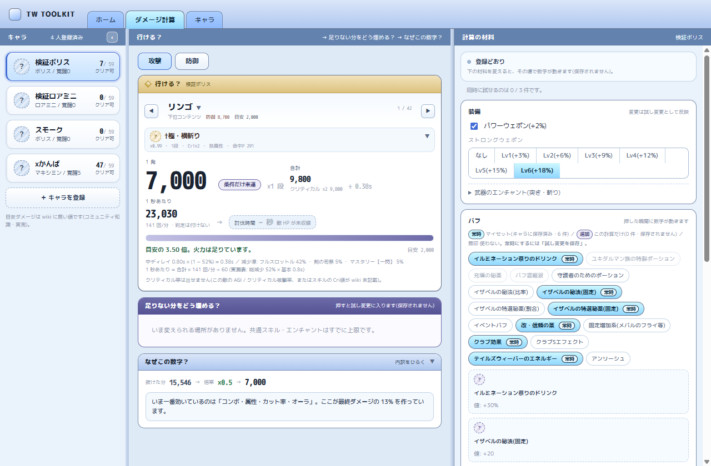

登録したキャラクターを軸に、ダメージ計算・強化提案・コンテンツ入場の可否を出す
Windows 向けのデスクトップツール。
結果だけでなく、攻撃力の内訳・防御の抜け方・効いている倍率まで展開して確認できます。
現在のインストーラには発行元の署名を付けていないため、初回起動時に SmartScreen の警告が出ます。
中身を確認したうえで進めたい場合は、警告の 詳細情報 を押して
実行 を選んでください。
ソースコードはすべて公開しており、配布ファイルは GitHub Actions が同じソースからビルドしたものです。署名は導入を進めています。

Tale Wiki の数値を同梱しているので、wiki で調べられる値を手で入れる必要はありません。
名前とキャラだけで登録。素ステ・覚醒・装備・シエナのオーラ・テシスコア・称号・ルーン・共通スキル・マスタリーまで、触ると保存前でも最終能力値が即座に再計算されます。
キャラ・スキル・コンテンツを選ぶだけ。1 発(最小/最大)・合計・クリティカル(発生率つき)と、1 秒あたりの火力を出します。
攻撃力の内訳、相手の防御をどれだけ抜けているか、どの倍率で伸びているか。能力値計算から与ダメージ式の各段まで、全部たどれます。
装備やステータスを仮に変えたときの差分を、キャラに保存せず試せます。次に何を強化すべきかが数字で出ます。
エリアごとのコンテンツ到達一覧。入場条件に対して何がどれだけ足りないかを並べます。
物理 / 魔法 / 複合の防御力・カット率・回避 P・特殊回避を、攻撃側と同じ粒度で確認できます。
インストールした PC の中で完結します。
| OS | Windows 10 / 11(64bit) |
|---|---|
| 必要なもの | Microsoft Edge WebView2 ランタイム(Windows 11 と、最近の Windows 10 には最初から入っています) |
| 保存先 | %APPDATA%\dev.twcontext.app\tw-context.sqlite更新のたびに自動でバックアップします(直近 3 世代) |
| 通信 | 自動的な外部通信はありません。ネットに出るのは問い合わせを送ったときと起動時の更新確認だけです。問い合わせは送信前に内容が全文表示されます |
| ゲームとの関係 | ゲームクライアントには接続せず、ゲームのファイルもメモリも読み書きしません。あなたが入力した情報だけで計算します |
| 料金 | 無料。ソースコードは MIT ライセンスで公開しています |
スキル倍率・敵ステータス・装備補正・入場条件などは、コミュニティ運営の
Tale Wiki を一次ソースとして取り込んでいます。
wiki に記載が無く、コミュニティの実測値に依っている数値は、アプリ内で [仮] と表示しています。
同梱しているアイコン画像の著作権はゲームの権利者に帰属します。詳細と、権利者の方からの 削除のご依頼については NOTICE.md をご覧ください。
不具合の報告や要望は GitHub の Issue か、アプリ右上の「情報」から直接送れます。